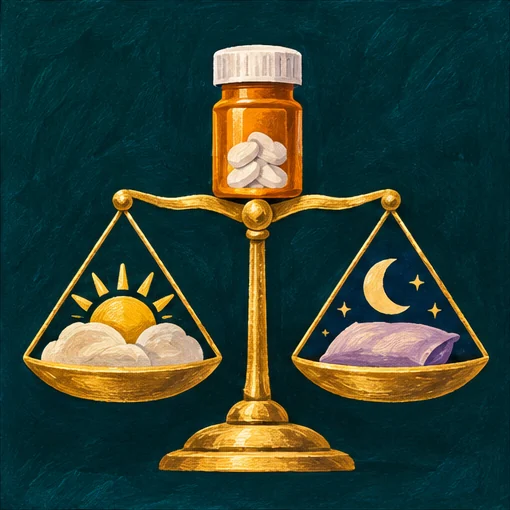
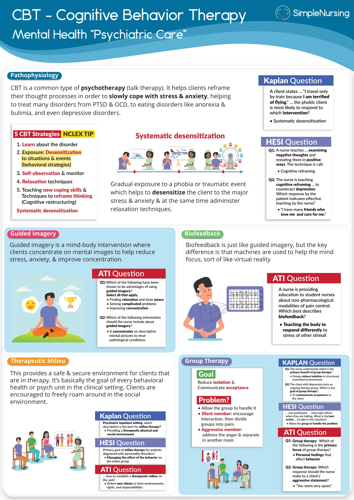
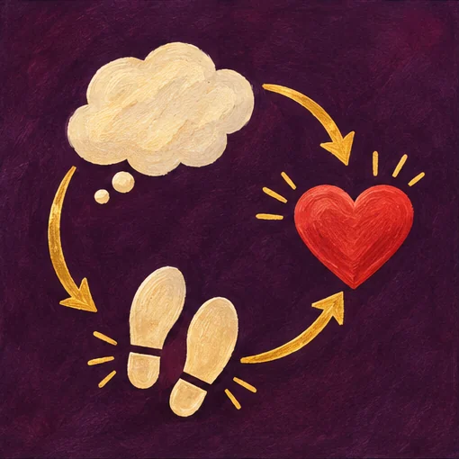
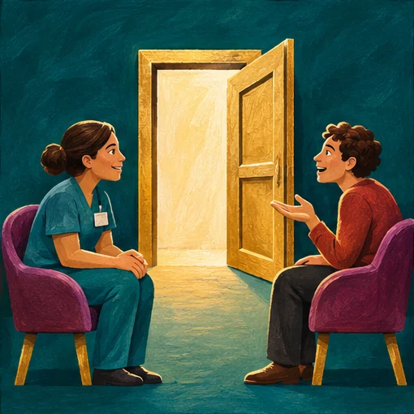

Which follow-up question helps distinguish benefit from an adverse effect?
- Think…
- “What symptoms have improved, and how alert do you feel during the day?” links the treatment goal to everyday function.
NUR 175 · Exam 1 · Simple exam guide
Modules 1–3

Compare the patient’s report with what you observe. Match the response to the phase of the therapeutic relationship.






A. Assess standing tolerance, sedation and fall risk.
The symptom could increase immediate risk of injury. Assess it and communicate findings so the regimen can be reviewed.
B. Explore the thought and agree on one manageable action.
Exploring the prediction and trying a small action connects the thought, emotion and behavior.